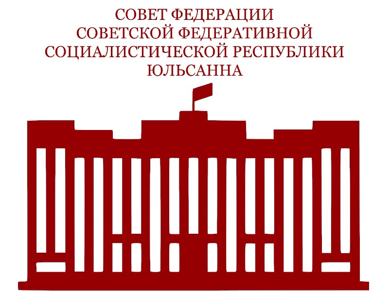

Политическая система СФСРЮ
Структура государственных органов и институтов власти Советской Федеративной Социалистической Республики Юльсанна. Политическая система основана на принципах социалистической демократии и разделения властей.
← Вернуться к категориям Википедии
Совет Федерации
Парламент СФСРЮ
Представляет интересы регионов СФСРЮ и народа СФСРЮ, утверждает федеральные законы и важнейшие государственные решения.
Правительство СФСРЮ
Высший орган исполнительной власти
Осуществляет руководство социально-экономическим развитием страны и реализацию государственной политики.

Портал правовых актов СФСРЮ
Единая информационная система
Содержит все действующие законы, указы, постановления и другие нормативно-правовые акты государства.

Верховный суд
Высший орган судебной власти
Обеспечивает правосудие и защиту прав граждан. Обеспечивает судебный надзор за деятельностью судов.

Администрация Президента
Орган обеспечения деятельности Президента
Обеспечивают деятельность Президента СФСРЮ, координируют работу федеральных органов власти.

Администрация Вице-президента
Орган обеспечения деятельности Вице-президента
Обеспечивают деятельность Президента СФСРЮ, координируют работу федеральных органов власти.
Федеральное Собрание
Исторический законодательный орган
Высший представительный и законодательный орган власти предыдущего периода. В настоящее время заменён Советом Федерации.
 Не действует
Не действует
Народная палата
Исторический законодательный орган
Консультативно-совещательный орган прямого народовластия. Функционировала в переходный период становления государственности.